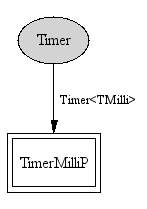

Component: tos.system.TimerMilliC
generic configuration TimerMilliC()
The virtualized millisecond timer abstraction. Instantiating this
component gives an independent millisecond granularity timer.
- Author:
-
Philip Levis
- Date:
-
January 16 2006
- See:
-
TEP 102: Timers
Provides
Wiring
